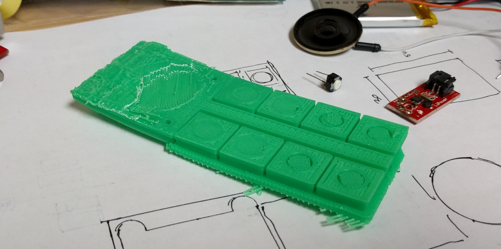

1K-OP
Inspired by the OP-1 from Teenage Engineering I set about to make a tiny homage to it which I could fit in my pocket. It was also an excuse to try to use my tiny mill to make some pleasant feeling key-caps.
PCB

Sketches
Fabrication
Failed test print meant to check sizing of components:
